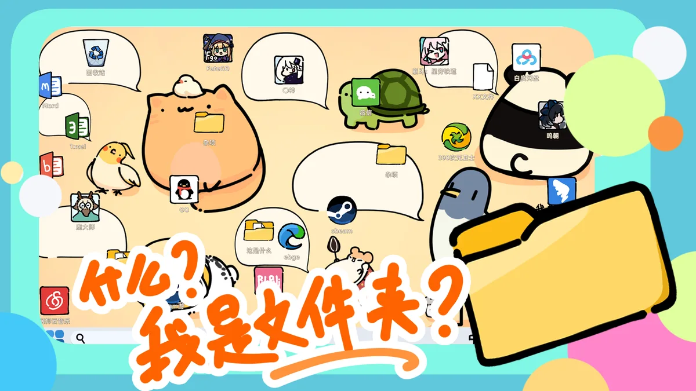
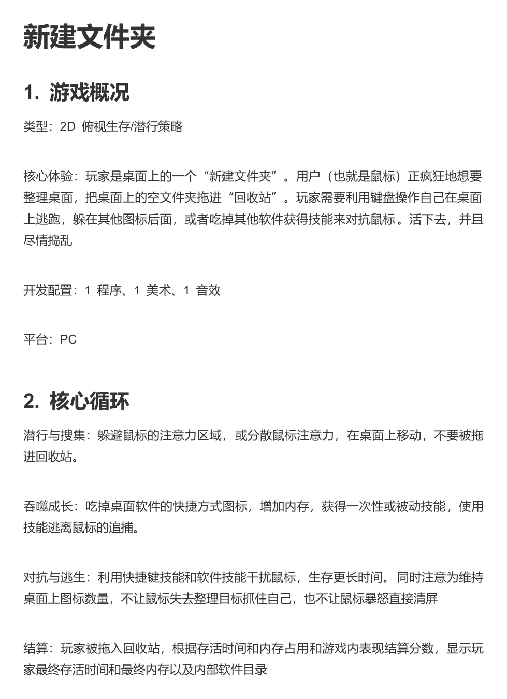
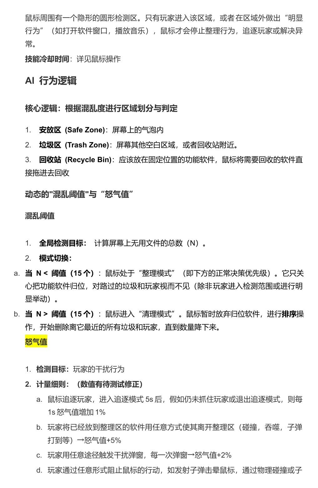

桌面里的生存游戏
玩家是一个新建文件夹，鼠标则在整理桌面。躲进其他图标后面、制造诱饵，避免被拖进回收站。
扮演桌面上的新建文件夹，躲避鼠标清理，吞噬软件获得能力。

玩家是一个新建文件夹，鼠标则在整理桌面。躲进其他图标后面、制造诱饵，避免被拖进回收站。
吞噬软件快捷方式获得能力；成长带来更多内存，也会影响移动速度。技能与桌面秩序共同构成逃生选择。
作品参加 TapTap 聚光灯 2025 年 48 小时游戏创作挑战（成都场）。把复制、剪切、回收站等熟悉的桌面操作转换为游戏规则。策划记录以潜行、搜集、成长和逃生为核心循环。
点击摘页查看完整尺寸。

